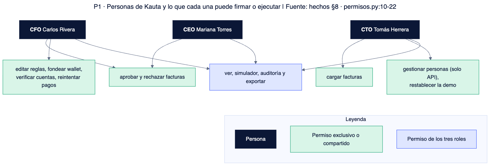
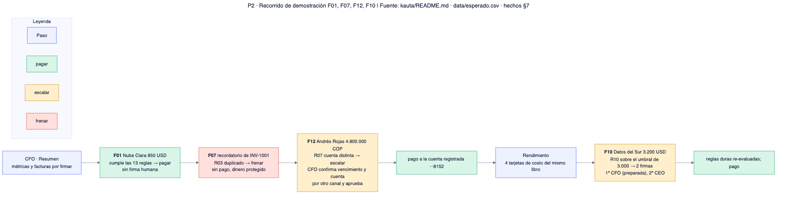

Personas y permisos
Tres personas de demostración con permisos distintos y segregación de funciones aplicada en el servidor. Fuente: hechos §8 (permisos.py:10-22); la pantalla solo oculta botones, el servidor responde 403.
Quién puede qué

La persona se elige sin contraseña; no autentica a quien abre la URL (kauta/README.md:13-15).
Matriz de permisos
| Capacidad | CFO | CEO | CTO |
|---|---|---|---|
| Ver facturas, resumen, wallet, reglas | sí | sí | sí |
| Aprobar o rechazar facturas | sí | sí | no |
| Cargar facturas | no | no | sí |
| Editar reglas | sí | no | no |
| Verificar cambio de cuenta | sí | no | no |
| Fondear wallet | sí | no | no |
| Reintentar pagos devueltos | sí | no | no |
| Usar el simulador | sí | sí | sí |
| Ver y exportar auditoría | sí | sí | sí |
| Gestionar personas (solo API) | no | no | sí |
| Restablecer la demo | no | no | sí |
El permiso cuentas.solicitar existe para el CTO pero ninguna ruta lo exige (hechos §8).
Evidencia por persona
CFO · Carlos Rivera
Puede: firmar, editar reglas (crea versión nueva y reevalúa), fondear, verificar cuentas, reintentar pagos.
No puede: cargar facturas; firmar solo una factura cuyas reglas cambió él mismo (agente.py:238-240).
CEO · Mariana Torres
Puede: aprobar o rechazar, ser segunda firma, ver auditoría y rendimiento.
No puede: editar reglas, fondear, verificar cuentas ni cargar (permisos.py).
CTO · Tomás Herrera
Puede: cargar documentos, gestionar personas por API, restablecer la demo.
No puede: aprobar ni rechazar facturas.
| Regla de segregación | Dónde se aplica |
|---|---|
| Quien cargó la factura no la aprueba | agente.py:233-234 (las del set llevan el buzón como cargador, nadie queda excluido) |
| Una persona no firma dos veces | UNIQUE en aprobaciones, modelos.py:226 |
| Quien pidió un cambio de cuenta no lo verifica | negocio.py:214-215 |
| Las reglas duras se re-evalúan al aprobar; las firmas no las saltan | agente.py:257-264 |
| Siempre hay un administrador cto activo | usuarios.py:154-155,170-171 |
Recorrido de demostración

| Factura | Caso | Regla | Resultado |
|---|---|---|---|
| F01 | Nube Clara, 850 USD, cumple el contrato | — | Pagar sin firma |
| F07 | Recordatorio de la INV-1001 ya pagada | R03 | Frenar, sin pago |
| F12 | Andrés Rojas, 4.800.000 COP; pide cuenta distinta (0093 frente a 8152) | R07 | Escalar; el CFO aprueba y se paga a la cuenta registrada |
| F10 | Datos del Sur, 3.200 USD, sobre el umbral de 3.000 | R10 | Escalar con 2 firmas: CFO y luego CEO |
F10 con la primera firma ya puesta requiere KAUTA_PREPARAR_RECORRIDO=1 o restablecer la demo con preparación (kauta/README.md:39-46). Los resultados del set vienen de data/esperado.csv; esta documentación no ejecutó la aplicación (NO VERIFICADO).